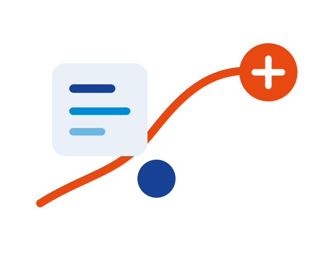
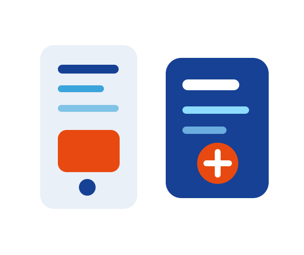
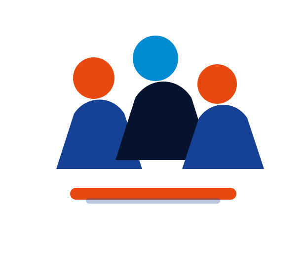
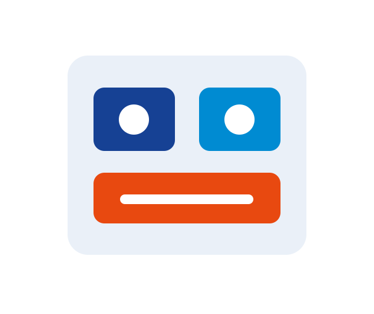
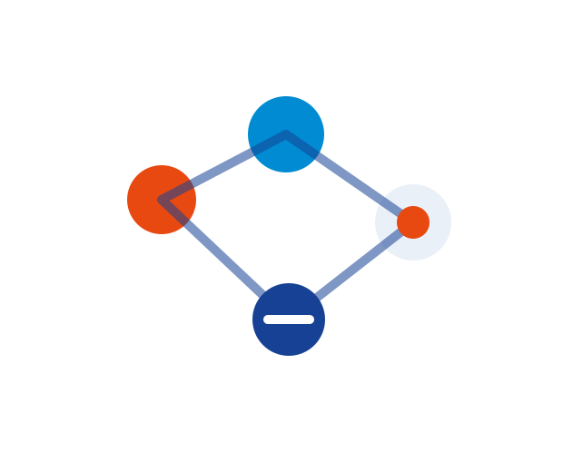
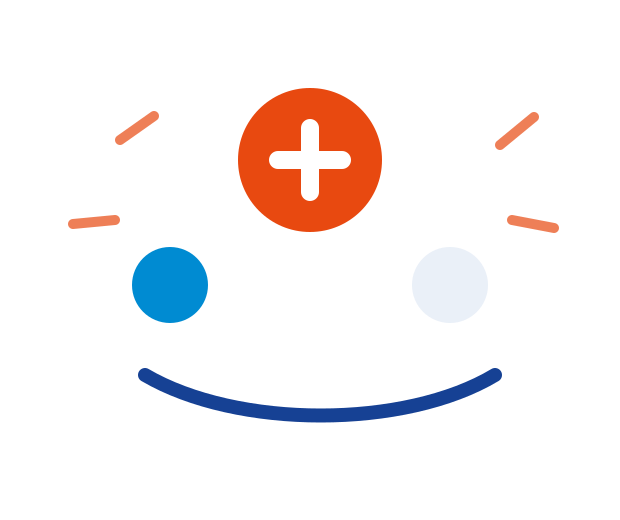

SAGA SENAI
DE INOVAÇÃO
A história que nos trouxe até aqui
Contexto histórico antes da nova Saga 2026 · SENAI Pernambuco
Antes da nova Saga, precisamos entender a Saga que nos trouxe até aqui.
Esta não é uma palestra sobre passado. É a construção do contexto que torna a próxima mudança compreensível.
Pense em um aluno.
O que esse jovem precisa saber fazer que uma aula expositiva, sozinha, não consegue entregar?

Antes dos dados, uma memória.
Equipe multidisciplinar
Quantos trabalharam com pessoas de cursos diferentes?
Mercado real
Quantos viveram uma situação real de empresa durante a formação?
Pitch
Quantos defenderam uma solução para um empresário?
A indústria chamava por outro tipo de formação.
Problemas reais exigem mais do que domínio técnico.
Exigem colaboração, comunicação, prototipagem, decisão e entrega.

As competências passaram a mudar mais rápido.
Fonte: Future of Jobs Report 2025 · World Economic Forum
das competências centrais dos trabalhadores devem mudar até 2030.
A MSEP é a raiz.
A Saga é o currículo em movimento.
A Saga materializa princípios da aprendizagem por competências em situações reais.
Não inserir data específica da MSEP sem validação documental.
Sem demanda real, não há aprendizagem real.
Situação-Problema é o desafio real que entra na escola como matéria-prima de aprendizagem.
formula
media
trabalha
prototipa
avalia
A Saga é uma trilha, não uma lista de eventos.
Prix
E se colocássemos velocidade de startup dentro da escola técnica?
Por que escuderia?

Identidade
pertencimento
Estratégia
papéis e ritmo
Colaboração
inteligência coletiva
Performance
entrega sob pressão
Pouco tempo. Alta intensidade. Entrega real.
Imersão
Ideação
Protótipo
Negócio
Pitch
Banca
O Grand Prix não termina em ideia.
Canvas
Como a solução cria valor?
Protótipo
Como a ideia começa a existir?
Pitch
Como a equipe defende a solução?
Pensar · fazer · testar · sintetizar · defender
A indústria não é espectadora.
Na Saga, a indústria demanda, acompanha, pergunta e avalia.
A faísca acendeu.
O Grand Prix mostrou que estudantes técnicos podiam:
01
entender problemas reais
02
trabalhar sob pressão
03
colaborar entre áreas
04
prototipar soluções
05
comunicar valor para a indústria
E então veio 2020.
A pandemia colocou à prova a capacidade de adaptação da Saga.

Uma boa ideia precisa de tempo para virar solução.
Se o Grand Prix acende a faísca, o DSPI sustenta a chama.
Projeto Integrador
continuidade pedagógica
Método
investigação, teste e banca
Aprendizagem contínua
o percurso também importa
O processo também é aprendizagem.
Na Saga, investigar, errar, testar, ajustar e comunicar têm valor pedagógico.
Uma mesma trilha.
Grand Prix
Intensidade, ideação rápida, protótipo inicial e pressão criativa.
DSPI
Profundidade, investigação, protótipo funcional e aprendizagem contínua.
Onde a ideia começa a existir?
No SENAI Lab.
Ideia → objeto · hipótese → teste · solução → protótipo
Do conceito ao MVP.
Nível 1
Protótipo conceitual
Nível 2
Protótipo funcional
Nível 3
MVP com potencial de aplicação
Prototipagem transforma aprendizagem em evidência concreta.
Alguém pagaria por isso?
Grand Prix
A equipe consegue ter uma boa ideia sob pressão?
DSPI
A equipe consegue transformar a ideia em algo que funciona?
Inova
A solução tem valor fora da escola?
Quando a aprendizagem atravessa a escola.
O maior impacto da Saga acontece quando o projeto não termina no evento.
Sala
Protótipo
Banca
Mentoria
Ecossistema
Continuidade
A Saga cresceu porque cada DR traduziu a proposta para sua realidade.
Identidade nacional + adaptação regional.

O valor da Saga não está apenas no pódio.
Aluno
protagonismo, confiança e repertório
Docente
mediação, projeto e inovação pedagógica
Escola
evidências, integração e cultura de inovação
Indústria
aproximação, talentos e soluções
E quando um modelo amadurece, ele também precisa mudar.
Crescimento
traz complexidade
Complexidade
exige governança
Governança
exige nova arquitetura
Crescimento real exige reconhecer limites.
O DSPI foi fundamental.
O sucesso da Saga foi exatamente o motivo pelo qual ela precisou evoluir.
A Saga não evolui por fraqueza. Evolui porque funcionou, cresceu e passou a exigir mais integração, evidência, governança e conexão curricular.
Se a Saga funcionou tão bem,
por que precisou mudar?
A resposta pertence ao segundo momento do encontro.
Vocês são essas pessoas agora.
A Saga chegou até aqui porque, em cada momento difícil, houve pessoas que escolheram avançar.
Ninguém constrói o futuro sem entender o que custou chegar até aqui.
